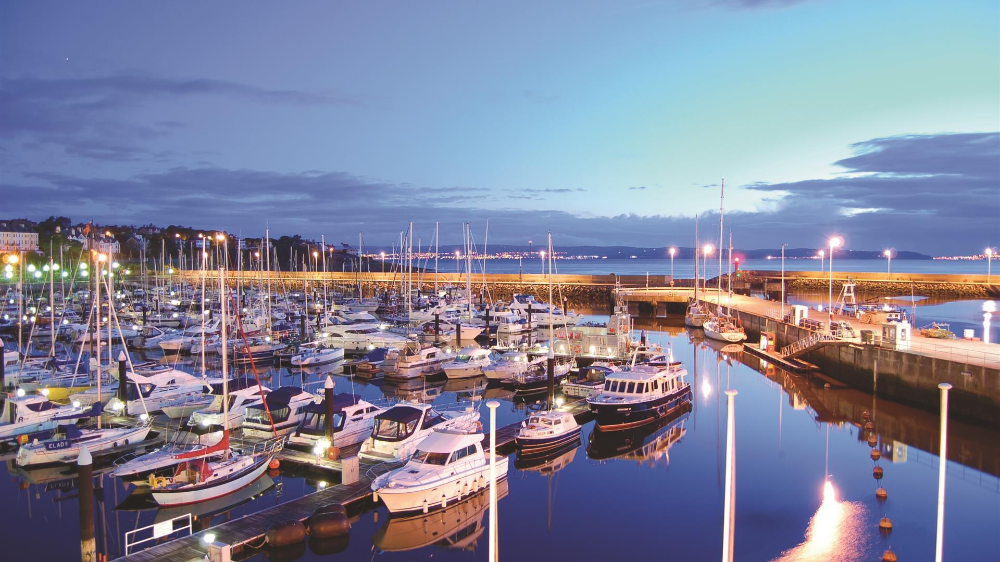

Services • Repairs • Diagnostics • Parts
Marine Engineering Support You Can Rely On
Philip Robinson Marine provides practical marine engineering services for boat owners, including engine servicing, repairs, diagnostics and parts support.
